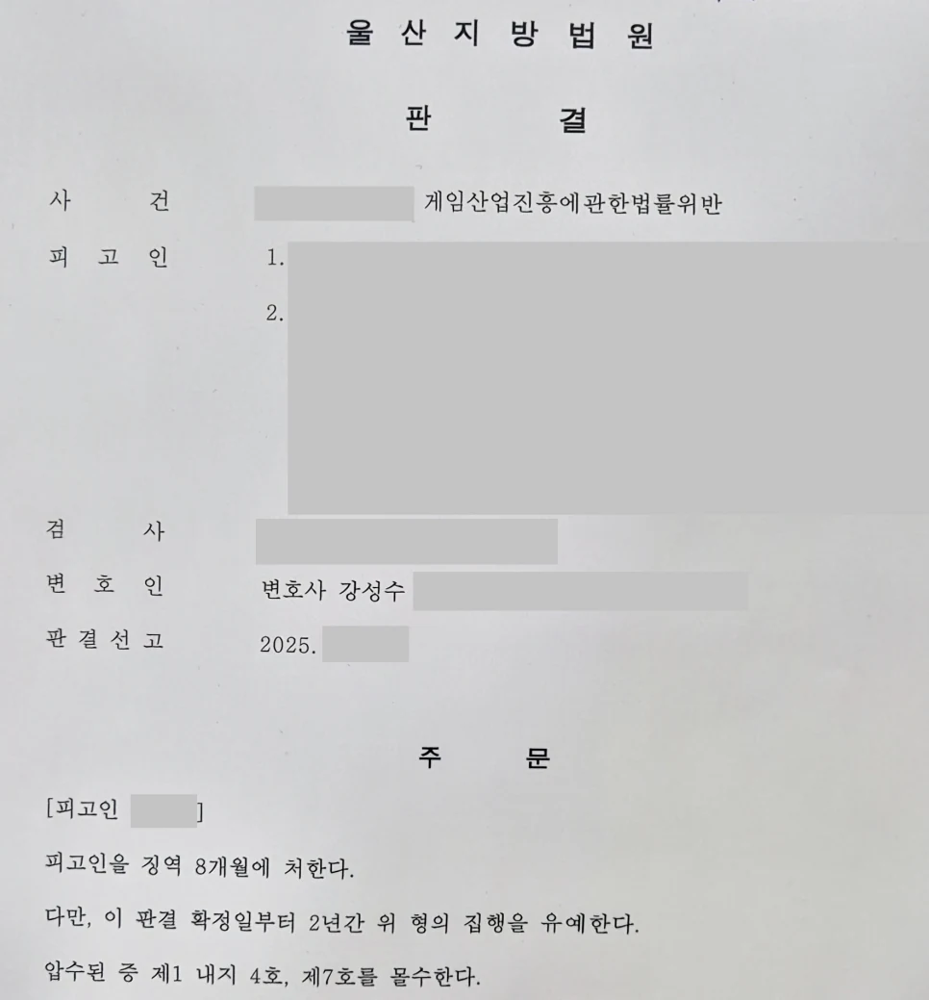

핵심 결과
불법 게임장과 환전 사건은 단순한 행정 문제가 아닙니다.
게임산업진흥에관한법률위반으로 형사처벌을 받을 수 있고, 사안에 따라 실형 가능성도 있습니다.
이번 사건은 등급분류를 받지 않은 게임물을 제공하고, 손님들이 얻은 점수를 현금으로 환전해 준 사건이었습니다.
범행 기간도 약 2년에 달했습니다.
하지만 법무법인 우린은 범행 경위, 반성 태도, 재범 방지 계획을 정리해 징역 8개월, 집행유예 2년을 이끌어냈습니다.
| 구분 | 내용 |
|---|---|
| 사건 분야 | 게임산업진흥에관한법률위반 |
| 문제 행위 | 등급미필게임물 제공, 점수 현금 환전 |
| 불리한 요소 | 장기간 범행, 공범 관계, 기존 전과 |
| 가장 큰 위험 | 실형 선고 가능성 |
| 주요 대응 | 범행 경위 정리, 반성자료, 재범 방지 계획, 가족 부양 사정 제출 |
| 최종 결과 | 징역 8개월, 집행유예 2년 |
사건 개요
의뢰인은 게임장을 운영하며 등급분류를 받지 않은 게임물을 제공한 혐의를 받았습니다.
또 손님들이 게임을 통해 얻은 점수를 현금으로 환전해 준 사실도 문제 되었습니다.
이는 게임산업진흥에관한법률위반에 해당할 수 있는 사안입니다.
사건의 조건은 불리했습니다.
범행 기간이 길었고, 공범들과 함께 운영한 정황도 있었습니다.
의뢰인에게는 과거 형사처벌 전력도 있었습니다.
실형 위험이 컸던 이유
- 등급분류를 받지 않은 게임물을 제공했습니다.
- 손님 점수를 현금으로 환전했습니다.
- 범행 기간이 약 2년에 달했습니다.
- 공범들과 함께 범행한 정황이 있었습니다.
- 의뢰인에게 기존 전과가 있었습니다.
이런 사건은 단순히 “몰랐다”거나 “반성한다”는 말만으로 방어하기 어렵습니다.
불법 게임장 사건에서 재판부가 보는 것
불법 게임장 사건은 실제 운영 구조가 중요합니다.
게임물이 등급분류를 받았는지, 환전이 있었는지, 운영 기간이 얼마나 되는지, 공범 중 역할이 무엇인지가 쟁점이 됩니다.
| 판단 요소 | 의미 |
|---|---|
| 게임물 등급분류 | 합법적으로 제공 가능한 게임물인지 |
| 환전 여부 | 사행성 판단의 핵심 요소 |
| 운영 기간 | 일시적 범행인지 장기간 영업인지 |
| 공범 관계 | 주도적 역할인지 보조적 역할인지 |
| 전과 및 재범 위험 | 다시 같은 영업을 할 가능성이 있는지 |
핵심은 범행을 부인하는 것이 아니라, 실형을 피할 수 있는 양형 구조를 만드는 것입니다.
해결 전략
1. 범행 경위를 솔직하게 정리했습니다
불법 게임장 사건에서 무리한 부인은 오히려 불리할 수 있습니다.
기록상 확인되는 부분은 인정하되, 왜 이런 상황에 이르게 되었는지 경위를 구체적으로 정리했습니다.
경제적 사정, 운영 과정, 공범 관계를 나누어 설명했습니다.
2. 재범 방지 가능성을 자료로 제출했습니다
재판부가 가장 우려하는 부분은 같은 영업을 다시 할 가능성입니다.
게임장 운영 중단, 관련 영업과의 단절, 향후 생계 계획을 정리했습니다.
다시 같은 범행을 하지 않을 환경을 만드는 것이 중요했습니다.
3. 가족 부양과 사회 복귀 가능성을 강조했습니다
실형을 선고할 경우 의뢰인과 가족에게 미칠 영향을 자료로 설명했습니다.
부양가족, 생활 기반, 반성자료, 재범 방지 계획을 하나의 흐름으로 묶어 제출했습니다.
재판부가 집행유예를 선택할 수 있는 근거를 만든 것입니다.
| 대응 항목 | 준비한 내용 |
|---|---|
| 사실관계 정리 | 게임장 운영 구조와 환전 경위 분석 |
| 범행 경위 | 경제적 사정과 공범 관계 구분 |
| 재범 방지 | 영업 중단, 관련 관계 단절, 향후 생계 계획 |
| 양형자료 | 반성문, 가족관계, 부양 사정, 생활 기반 자료 |
| 변론 방향 | 실형보다 사회 내 교정이 타당하다는 점 강조 |
결과
재판부는 불법 게임장 운영과 환전 행위를 가볍게 보지 않았습니다.
장기간 범행과 기존 전과도 불리한 요소였습니다.
하지만 의뢰인의 반성 태도, 재범 방지 계획, 사회 복귀 가능성도 함께 고려되었습니다.
그 결과 실형이 아닌 집행유예가 선고되었습니다.
최종 결과
불법 환전과 등급미필게임물 제공이 문제 된 게임산업진흥에관한법률위반 사건에서 징역 8개월, 집행유예 2년이 선고되었습니다.
의뢰인은 구속을 피하고 가족의 곁으로 돌아갈 수 있었습니다.
불법 게임장 사건에서 조심해야 할 점
게임장 사건은 단속 이후 초기 대응이 중요합니다.
압수된 자료, 환전 장부, 게임기 내역, 공범 진술이 모두 증거가 될 수 있습니다.
따라서 사건 초기부터 운영 구조와 본인의 역할을 정확히 정리해야 합니다.
전과가 있거나 운영 기간이 길다면 실형 위험이 커질 수 있습니다.
하지만 재범 방지 구조와 양형자료를 제대로 준비하면 집행유예 가능성을 검토할 수 있습니다.
결론
불법 게임장, 사행성 게임물, 환전 사건은 단순한 영업 문제가 아닙니다.
실형 가능성이 있는 형사사건입니다.
하지만 범행 경위, 역할, 재범 방지 계획, 가족 부양 사정을 제대로 정리하면 결과는 달라질 수 있습니다.
사무장·상담실장 없이 변호사가 직접 상담합니다
게임산업진흥법위반 사건은 기록 검토와 초기 전략이 중요합니다.
법무법인 우린은 강성수 변호사가 직접 상담하고, 수사기록 분석부터 양형자료 준비, 재판 변론까지 직접 진행합니다.
단속을 받았거나 실형 가능성이 걱정된다면 먼저 사건 기록과 운영 구조를 정확히 확인해야 합니다.
이 글은 일반적인 법률 정보 제공을 위한 자료이며, 개별 사건의 결과를 보장하지 않습니다. 구체적인 대응은 사실관계와 증거에 따라 달라질 수 있습니다.